Welcome to the exclusive protist bookshelf. An advanced collection for the mildly educated biologist who wants to take their eukaryotic knowledge a bit further. We are currently expanding to other major groups.
▔▔▔▔▔▔▔▔▔▔▔▔▔▔▔▔▔▔▔▔▔▔▔
Alastair Simpson Course Note Collection
*These are extremely helpful, well-written, and rare. Start here for your eukaryotic education.
General Collection
Amoebozoa Collection
 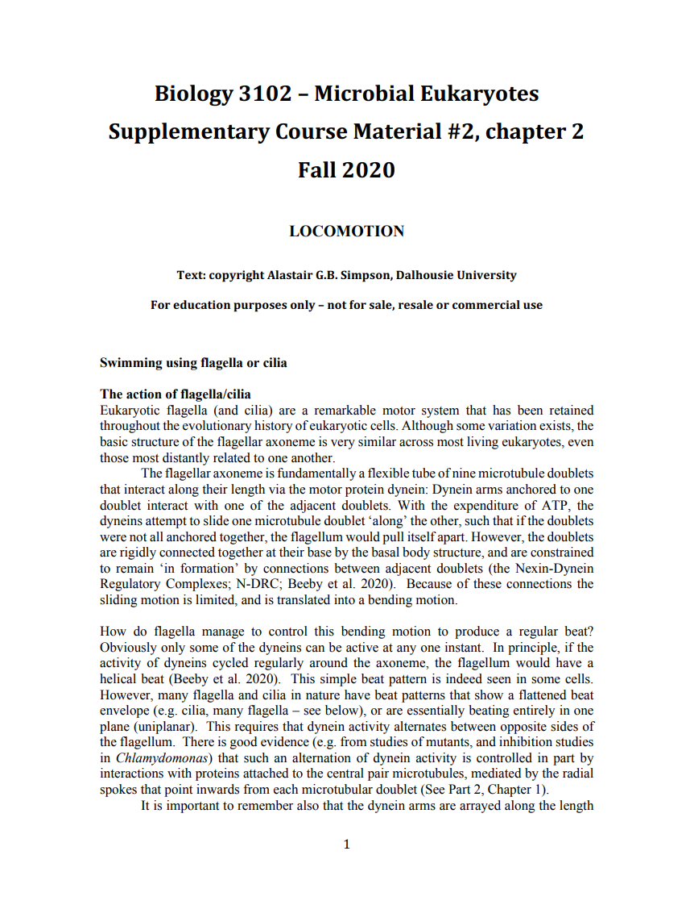
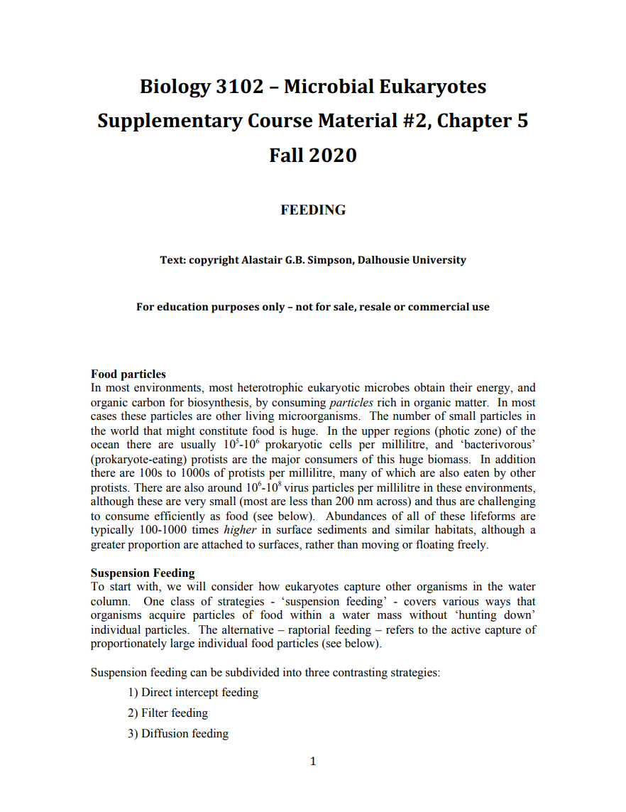
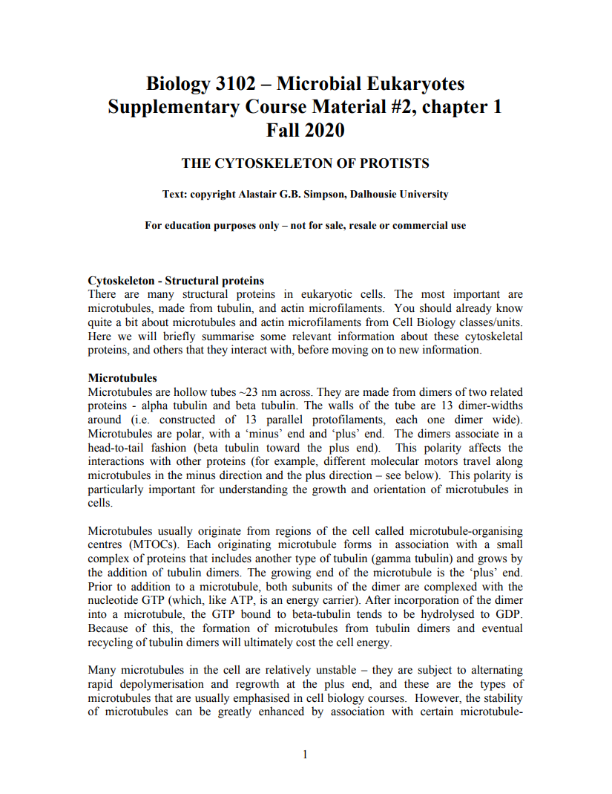
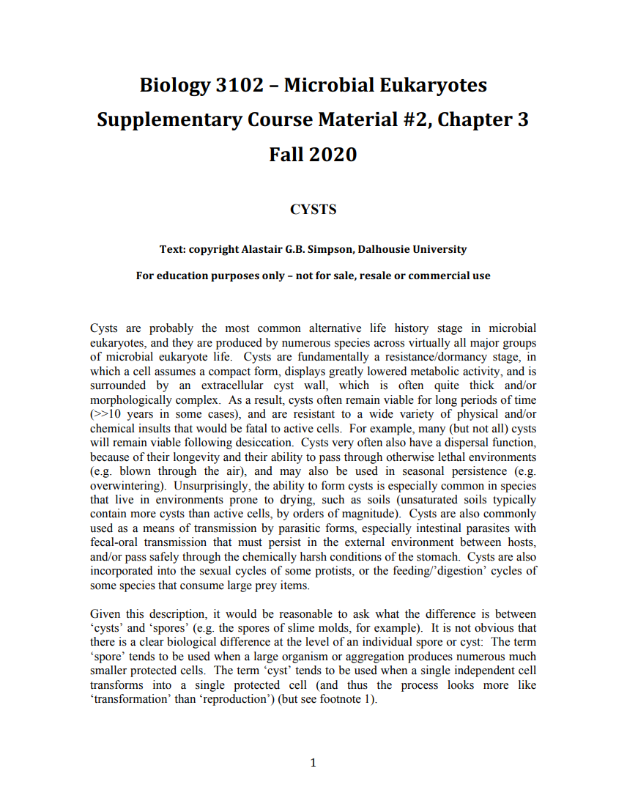
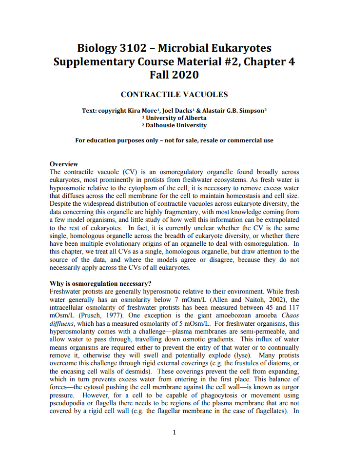
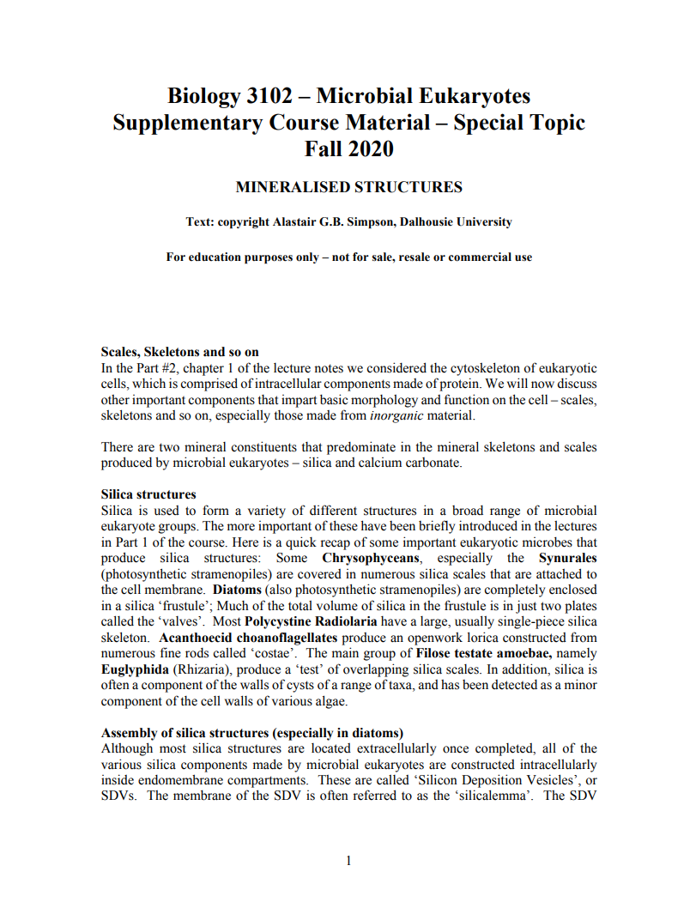
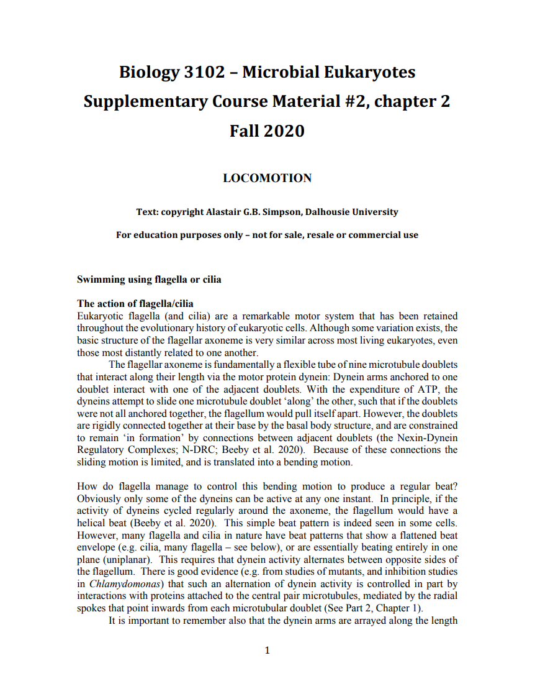
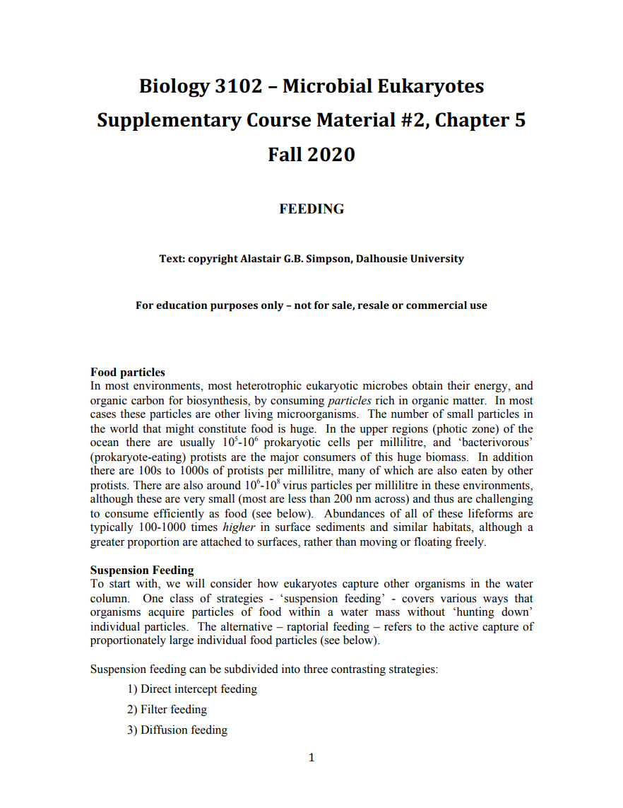
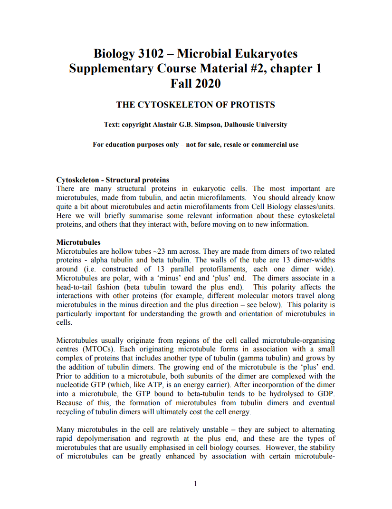
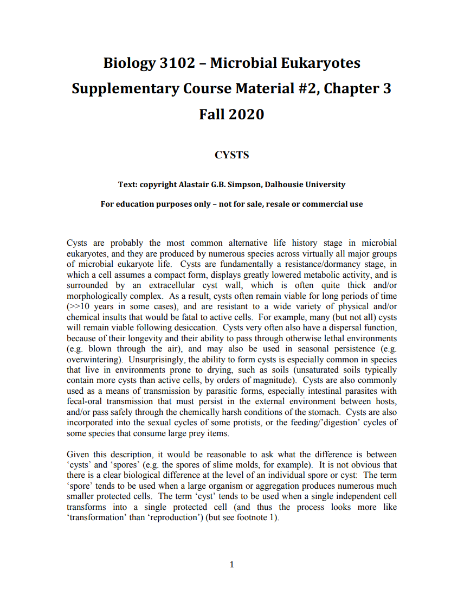
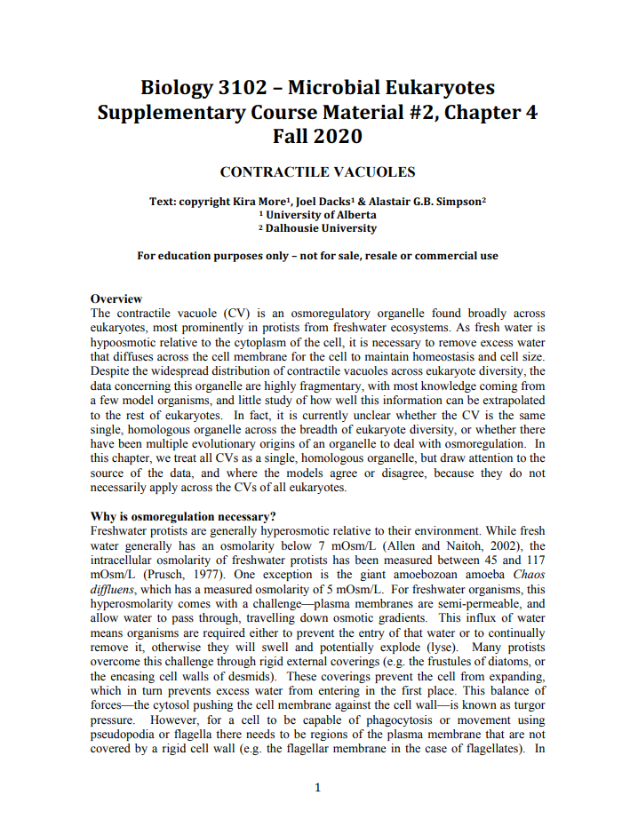
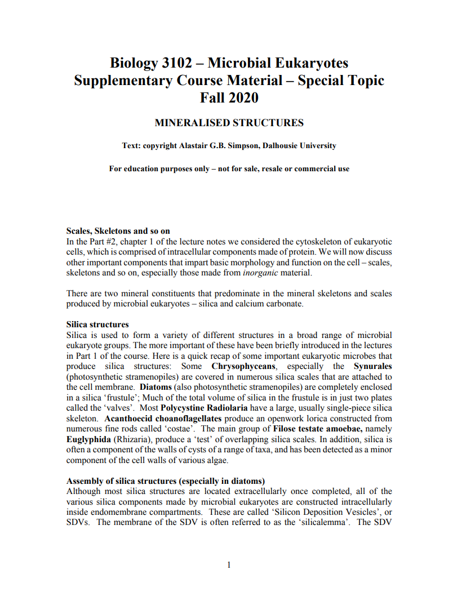